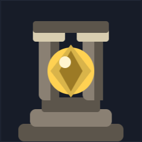
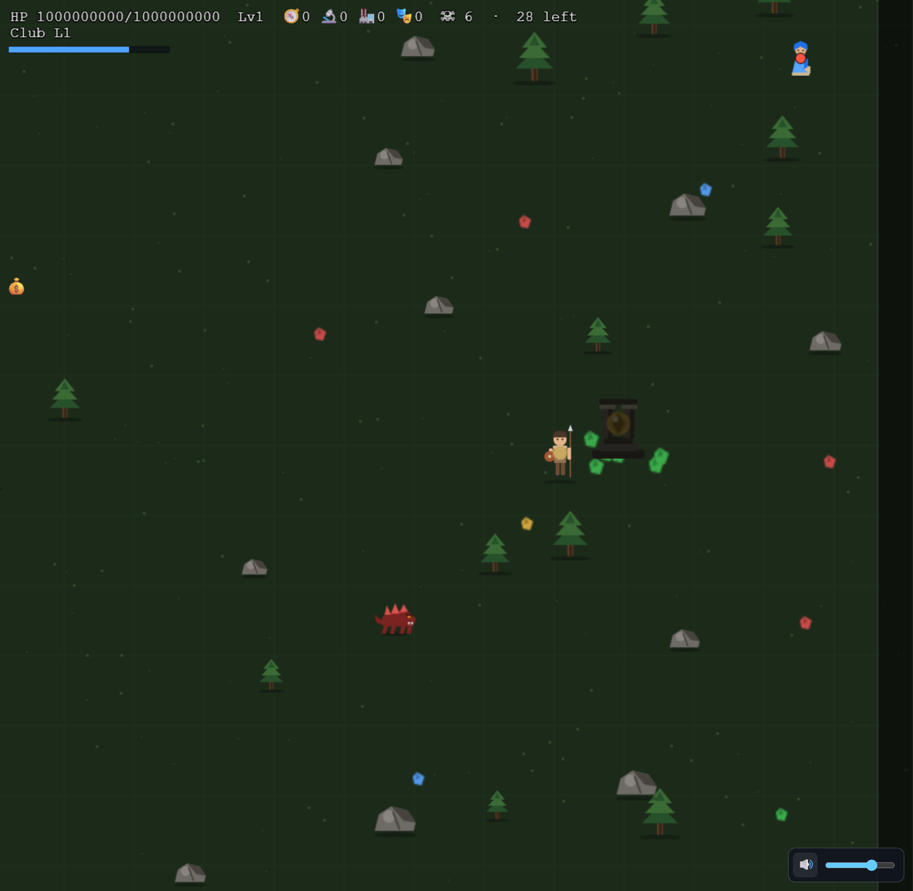
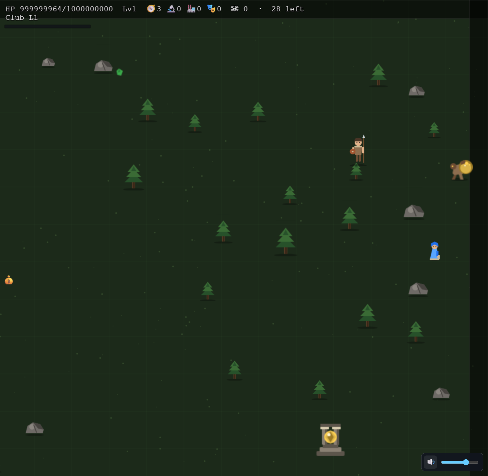
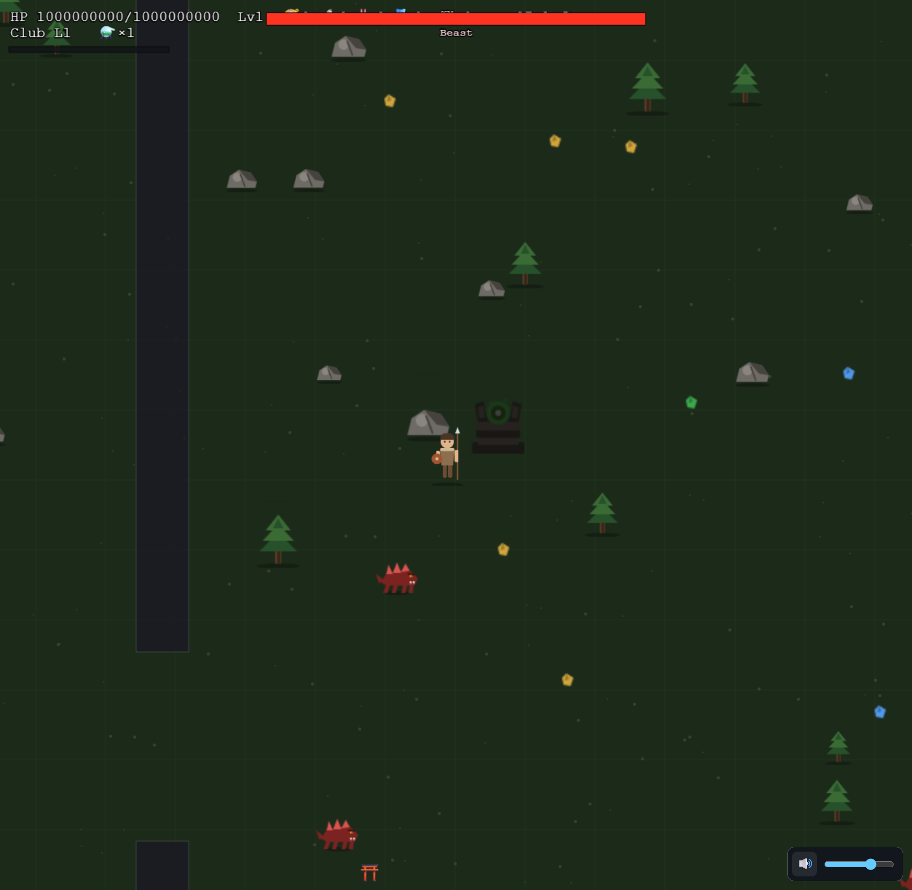

All three rendered through the production sprite pipeline. Shape-data only — any change you want is a one-file tweak in src/art/sprites/pois.ts, zero system rework.
Sprites (close-up, 3× zoom)

poi_shrine — stepped plinth, twin pillars, culture-gold relic with ember halo.poi_altar — anvil slab, two inward arms cradling the green catalyst orb.
Verifier's honest critique: the shrine can read slightly brazier/hourglass-ish at distance, and the courier leans "animal with orb" more than "loot on legs". Judge in gameplay context below.
In gameplay

Shrine, consumed — culture jackpot bursting after the guardian wave fell.

Courier mid-flee — with the shrine's ⛩️ edge indicator on the bottom edge.

Altar, consumed — HUD shows ⚗️×1; the woken pack (and boss HP bar) inbound. The wager in one frame.